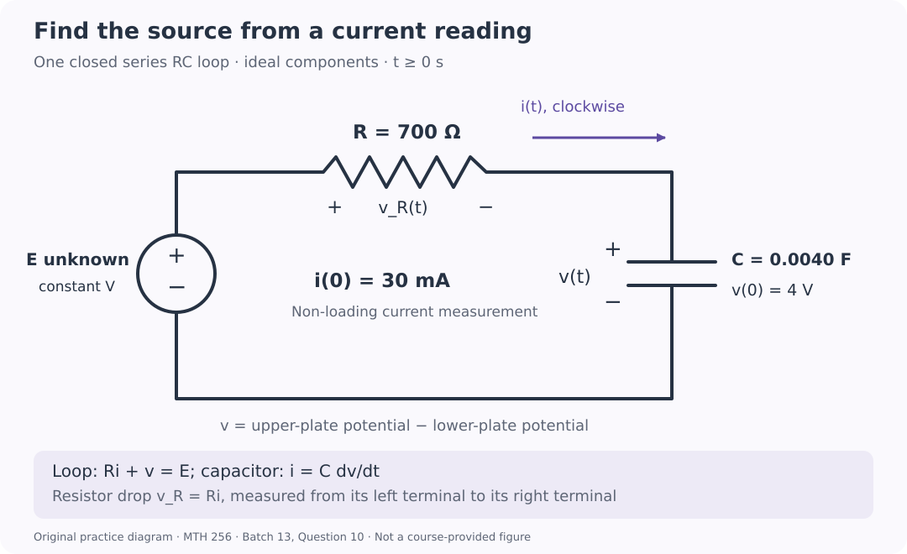

Course practice / Batch 13 / 2026-10-11 PDT
MTH 256
一阶微分方程
First-order differential equations · 阶数与线性、初值及解验证、方向场、分离变量、积分因子、牛顿冷却、指数与逻辑斯蒂增长、定容混合模型及 RC 电路
A logarithmic curve can solve a linear equation
Consider \((t+3)y^{\prime}=1\), with y(0) = ln 3, and the proposed function \(u(t)=\ln(t+3)\). Both variables are dimensionless. Use real logarithms on the stated domain \(t>-3\).
- Identify the independent variable, dependent variable, and order. Write the equation in first-order linear form. Does the logarithm in the proposed solution make the differential equation nonlinear?
- Differentiate u and check both the differential equation and the initial condition. Find u(−2) and the slope there.
- Find the interval containing t = 0 on which this proposed real solution is defined. Describe its behavior as t approaches −3 from the right, and explain why substituting t = −4 into the original equation does not make ln(t + 3) a real-valued solution there.
中文提示（不含解答）
方程是否线性取决于因变量及其导数在方程中的形式；解里出现对数不等于方程非线性。实对数还需要正的自变量。
A squared displacement keeps the same slope sign
For \(y^{\prime}=t(y-1)^2\), both variables are dimensionless. Put t on the horizontal axis and y on the vertical axis.
- Calculate slopes at all nine points with \(t\in\{-1,0,1\}\) and \(y\in\{0,1,2\}\), then sketch a short segment at each point. Explain why the rows y = 0 and y = 2 agree.
- Find every horizontal slope segment and every constant equilibrium solution. Explain why the vertical line t = 0 is not itself the graph of an equilibrium y(t).
- State the slope signs for t < 0 and t > 0 away from y = 1. A solution with y(0) = 2 is defined on both sides of t = 0. Does it have a local maximum, a local minimum, or neither at t = 0? Explain using nearby slope signs; do not solve the equation.
中文提示（不含解答）
平方项不会因为跨过 y = 1 而变号；但要把整行零斜率与某一时刻整列零斜率区分开。
A cubic decay law starts with a flat tangent
Solve \(y^{\prime}=-2ty^3\), y(0) = 1, for \(t\ge0\). Both variables are dimensionless. Work with the positive solution selected by the initial value.
- Separate variables, integrate, and find an explicit solution. Identify the constant equilibrium lost when dividing by \(y^3\), and explain why it does not satisfy this IVP.
- Verify the differential equation and initial value. Find the first time y = 1/3 and the slope at that time, both exactly. Justify that the target occurs only once on t ≥ 0.
- Find the initial slope and the long-term limit. Explain why the initial horizontal tangent does not make the solution constant, and determine whether the limiting value is reached at any finite time.
中文提示（不含解答）
分离后积分负三次幂；解出平方关系时，用初值选择正号。初始导数为零只描述一个时刻。
An algebraic tail slows successive gap halvings
For \(t\ge0\), solve \(y^{\prime}+2y/(t+3)=8/(t+3)\), y(0) = 2. Both variables are dimensionless. Define the gap from level 4 as \(D(t)=4-y(t)\).
- Find an integrating factor, write the product-derivative equation, and solve the IVP. Verify the differential equation and initial value.
- Find the first times D = 1 and D = 1/2, exactly and to three decimals. Compare the elapsed times for the two successive halvings 2 → 1 and 1 → 1/2.
- Find the slope when D = 1, exactly and to three decimals. Find the long-term limit of y and determine whether it reaches level 4 at a finite time. Explain from the formula why later gap halvings need more time.
中文提示（不含解答）
积分因子会把左边变成乘积的导数；比较两段等待时间时，第二段要用两个累计时刻相减。
The response stays continuous when an input stops
A dimensionless response satisfies \(y^{\prime}+2y=f(t)\), y(0) = 1, where f(t) = 4 for \(0\le t<2\) and f(t) = 0 for \(t>2\). The response y is continuous at t = 2. Apply the differential equation within each stage and use one-sided derivatives at the change; no derivative at t = 2 is assumed. Use the model for t ≥ 0.
- Solve the first-stage IVP by an integrating factor and find y(2). Use that value to solve the second stage, expressing both stages in terms of the original time t.
- Find \(y^{\prime}(2^-)\) and \(y^{\prime}(2^+)\), exactly and to three decimals. Locate the greatest response on t ≥ 0 and give its value exactly and to three decimals.
- Find the first time after the input stops that y returns to its initial value 1, exactly and to three decimals. Check that your time lies after t = 2, and find the long-term limit.
中文提示（不含解答）
第二阶段的初值来自第一阶段末端；用 t − 2 表示切换后的经过时间。连续不意味着左右导数相等。
Two late readings reveal the missing starting temperature
A sample is placed in a room held at 16 °C at t = 0, but its starting temperature is not recorded. Its temperature is 56 °C at t = 4 min and 36 °C at t = 10 min. Assume \(T^{\prime}=-k(T-16)\), with constant k > 0 in min\(^{-1}\). Use T in °C, t in minutes, and this model for all requested times t ≥ 0.
- Determine k exactly and to four decimals with units. Find T(t), recover T(0) to three decimals, and verify both observed temperatures.
- Find the first time T = 26 °C, measured from the original start. Compare the elapsed times for the drops 56 → 36 °C and 36 → 26 °C, using temperature excess above the room.
- Find the instantaneous cooling rates at t = 10 min and at T = 26 °C, exactly and to three decimals with units. Compare them with the average cooling rate between those two times. Find the limiting temperature and state whether it is reached at a finite time.
中文提示（不含解答）
先对两次读数减去室温，再取比值；两个读数之间经过的是 6 分钟，不能把第一次读数误当作 t = 0。
A growth-rate threshold also fixes a population
A continuously modeled culture follows \(P^{\prime}=rP\), with an unknown constant r > 0. Initially P(0) = 350 organisms and its measured initial growth rate is 28 organisms/hour. Assume no removals or carrying-capacity limit. Use t in hours and the model for t ≥ 0. Define the threshold time as the first time the instantaneous growth rate reaches 56 organisms/hour.
- Determine r with units and solve for P(t). Verify both the initial population and the measured initial growth rate.
- Find the population at the threshold and the threshold time, exactly and to three decimals in hours. Find the average population growth rate from t = 0 to that time, to two decimals with units.
- Find the population and instantaneous growth rate halfway through that elapsed time, exactly and to two decimals. Compare that population with the arithmetic midpoint of the initial and threshold populations, and explain why they need not agree.
中文提示（不含解答）
达到指定增长速率时，先用 rP 求对应的种群数量，再求时间。时间取中点与数量取算术中点是不同操作。
Total growth and growth per organism tell different stories
A culture follows \(N^{\prime}=0.18N(1-N/1500)\), N(0) = 300 organisms. Time t is in days, 0.18 has units day\(^{-1}\), and 1500 organisms is the carrying capacity. Treat N as continuous and use t ≥ 0. Define the total growth rate as \(G=N^{\prime}\), in organisms/day, and the per-capita growth rate as \(g=N^{\prime}/N\), in day\(^{-1}\), for N > 0.
- Find the nonnegative equilibria and the slope signs between and above them. Solve the IVP by separation and find the long-term population limit.
- Find the first time N = 1000, exactly and to two decimals in days. Find G and g both initially and at that target population, with units.
- Find the greatest total growth rate attained for t ≥ 0, and give the population and time at which it occurs. Over the time from the initial population to that maximum, does g increase or decrease? Explain how total growth can rise while growth per organism falls.
中文提示（不含解答）
总增长速率包含种群数量这个因子；人均增长速率则先除以 N。先确定解会经过哪些数量，再寻找最大值。
A concentration reading identifies the pump rate
A tank initially contains 120 L of liquid and 1.2 kg of dissolved salt. Brine containing 0.050 kg/L enters at an unknown constant rate q > 0 L/min, and perfectly mixed liquid leaves at the same rate q. A non-removing concentration measurement gives 0.030 kg/L at t = 6 min. Assume constant rates, perfect mixing, no evaporation, and no other losses. Let S(t) be salt mass in kg, \(C(t)=S(t)/V(t)\) concentration in kg/L, and t time in minutes. Use the model for t ≥ 0.
- Find V(t) and the initial concentration. Set up and solve the IVP for S(t) in terms of q, then use the measurement to determine q exactly and to three decimals with units.
- Give C(t) with the fitted q. Find the first time C = 0.045 kg/L, exactly, and find the salt mass at that time. Check that this finite-time target lies strictly between the initial and limiting concentrations.
- Up to the target time, find the total volume admitted, the salt admitted, and the salt removed, each exactly and to three decimals with units. Obtain the removed salt by integrating the outgoing salt rate, and verify the overall salt balance.
中文提示（不含解答）
等流量进出使体积保持不变；测量给出的是浓度，不是盐量。最后既可积分排盐速率，也可用初始量加流入量减末量核对。
An initial current reveals an unknown source voltage
The diagram shows one closed series loop with an ideal unknown constant voltage source E > 0 in volts, a resistor R = 700 Ω, and a capacitor C = 0.0040 F. Capacitor voltage v(t), in volts, is the upper-plate potential minus the lower-plate potential; v(0) = 4 V. Current i(t), in amperes, is positive clockwise, into the upper plate. A non-loading measurement gives i(0) = 30 mA. The source polarity gives \(Ri+v=E\), and the resistor voltage drop in that direction is \(v_R=Ri\). Use t in seconds, ideal components, and t ≥ 0.
- Determine E from the initial data. Write and solve the IVP for v(t), find the RC time constant, and verify the differential equation and initial voltage.
- Find i(t) and \(v_R(t)\). Check the measured initial current, state the actual current direction at finite times, and find the long-term limits of i, v, and \(v_R\).
- Find the first time i = 10 mA, exactly and to three decimals in seconds. Find v and \(v_R\) then, and verify their sum. Compute the signed charge delivered into the upper plate from t = 0 to that time, in coulombs, by integrating i; check it against the change in \(Q_C=Cv\).

中文提示（不含解答）
先把毫安换成安培，再用初始回路方程求电源电压；电流目标也可转化为电阻电压目标。电荷积分必须保留电流的正负约定。